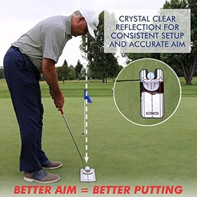
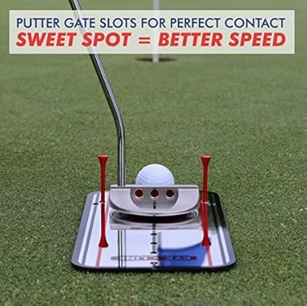

Motor Learning Study Design
If learning can only be inferred, the inference has to be built well. Here’s the design that does it.
By the end of this lesson you will be able to…
- 1Explain why a practice-phase comparison can’t tell you which group learned more.
- 2Describe the transfer/retention design and the logic that makes it work.
- 3Interpret the four possible outcomes of a retention test.
- 4Lay out the phases of a typical study and distinguish outcome vs. production measures.
Does a putting aid actually help people learn?
You want to test whether a new golf putting alignment aid improves learning to putt. The device gives a mirror reflection for consistent setup and gated slots for square contact:


So you run a clean experiment:
Practices with the aid
Putts using the alignment device on every trial.
Practices without the aid
Putts under otherwise identical conditions, no device.
Both groups practice the same amount. You measure success rate per 10 putts across 10 sessions, and plot the curves.
During practice, the aided group scores higher
Throughout all 10 practice sessions, the group using the alignment aid sinks more putts. The curves are clear and consistent.
Can you conclude the aid group learned more?
Choose an answer to continue.
Practice has two kinds of effect
Practice changes a learner in two ways at once, and a practice-phase curve blends them together:
Vanish with time or changed conditions
Effects that disappear once you rest, or once the conditions change — like the aid being removed.
Persist across days and years
The durable changes that are the actual target — what we mean by learning.
The aided group’s better practice performance could be real learning — or just the temporary crutch of the device. From the practice curve alone, you cannot tell which. That’s the whole problem.
The transfer / retention design
To separate the two kinds of effect, you add two things after practice ends:
Wait — let temporary effects fade
Insert a rest period so any temporary effects of practice dissipate. The amount varies, but typically at least 24 hours.
Re-test everyone under identical conditions
Bring all groups back and test them the same way — crucially, with no alignment aid for anyone.
Any difference that remains at the retention test — after temporary effects have faded and the crutch is gone — must reflect a difference in the relatively permanent capability built during practice. That is learning.
Retention vs. transfer test
The final test comes in two forms, and the difference matters:
- RRetention test — the same task, performed later. Asks: did the capability last?
- TTransfer test — a related but different task or context. Asks: did the capability generalize?
Either one, given after rest and under common conditions, isolates the permanent effect. We’ll dig into transfer specifically in the next lesson.
Four things the retention test could show
The practice curves are fixed: the aid group (teal) outperformed the no-aid group (gold) all through practice. Now the retention test comes back. Select each of the four outcomes to see where the groups land and what it means.
What did the retention test reveal?
Each button redraws the retention-test result and interprets it. Try all four — they cover every way the study could turn out.
Explore all four to continue.
When practicing with help hurts learning
Situation 4 is the surprise: the aid group looked best during practice but ended up worse at retention. The device created a sense of learning that evaporated when it was removed.
Certain practice conditions reliably do this — they boost performance now while degrading learning. Extrinsic feedback given too often, and massed practice, are two examples you’ll meet later. Bjork’s “desirable difficulties” from Lesson 1 is the flip side of the same coin.
The practical lesson: never trust practice performance as proof of learning. Always look to the retention or transfer test.
A group trained with constant therapist cueing outperforms a no-cueing group all through practice. At a retention test 48 hours later — no cueing for anyone — the two groups score the same. What do you conclude?
Answer to continue.
The shape of a motor learning study
Almost every motor learning study — including the one you’ll run in lab — follows the same sequence of phases:
Familiarization
Learners get comfortable with the task and equipment so first-timer confusion doesn’t pollute the data.
Baseline test
Measure starting performance before any practice, so you can see change.
Acquisition
The practice phase — trials grouped into blocks. This is where the manipulation (the aid, the feedback, the schedule) happens.
Rest
Let temporary effects dissipate — typically at least 24 hours.
Retention / transfer test
Re-test all groups under identical conditions. This is the measurement that speaks to learning.
Put the study in order
Here are the five phases, shuffled. Drag them into the correct order, top to bottom — or tap one, then tap another, to swap them. On a keyboard, focus a card and use the ↑ / ↓ keys.
Arrange the phases and check to continue.
What do you actually measure?
Quantitative measurement is essential — and it takes two decisions: which aspects of performance to measure, and how to measure them.
Throwing at a target: do you measure how close to the bullseye (the result)? Or the arm’s joint angles and muscle timing (the movement that produced it)? Both are valid — they answer different questions. That split defines the two measurement families on the next screen.
Outcome vs. production measures
The result of the movement — what happened, not how.
- How far the ball was thrown
- Reaction time
- Error from a target
- Number of successful trials
Tells you the outcome — but nothing about the muscles or nervous system that produced it.
How the nervous, muscular, and skeletal systems produced the movement.
- Kinematics of joint movements
- Muscle activation (EMG)
- Brain activity (EEG, fNIRS, fMRI)
Speaks to the movement and neuromotor levels — the mechanisms underneath the outcome.
What you can now do
- 1Explain why practice-phase performance can’t establish learning.
- 2Describe the transfer/retention design — rest, then re-test under common conditions — and why it works.
- 3Interpret all four retention-test outcomes, including the counterintuitive one.
- 4Lay out the five study phases and tell outcome from production measures.
Lessons 1–3 build one argument: learning isn’t performance, a performance curve can’t show learning, and the transfer/retention design is what finally separates them. That’s the foundation your homework and the lab will put to work.
Next steps in Canvas: complete the homework activity and the quiz covering Lessons 1–3.
Looking ahead: next week we treat transfer of learning as a topic in its own right — near vs. far, positive vs. negative, and why it’s the real goal of practice.